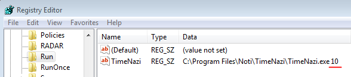

TimeNazi
FAQ
Releases
Background images
TimeNazi
FAQ
Releases
Background images
An app to enforce you to take a break from the computer every x minutes
GitHub page
FAQ:
How do I revoke the application's right to acces my google drive? On this page, select TimeNazi, and click "Remove".
Where does the application store the logs/activity/background images/config files on my machine?
Base directory: C:\Users\<username>\AppData\Local\Noti\
ActivityLogs: <basedir>\TimeNazi\ActivityLogs
Backgrounds: <basedir>\TimeNazi\Backgrounds
Logs: <basedir>\TimeNazi\Logs
Config:
v1.0.0: <basedir>\TimeNazi.exe.*\<version>\user.config
v1.0.1+: <basedir>\user.config
How does the database work? The database is basically a spreadsheet in your google drive. It has two sheets (plus one, created by the lib):
- - Config: has only one row, and contains the configuration of the app
- - ActivityLog: every time something happens in the app, it gets inserted here
How does the application know what background files to download and from where?
The background images are hosted in this GitHub page in a files.list file. It contains the names and the MD5 hash of the files.
The application has a key by the name of BackgroundImagesSource in it's config file. This key contains the link to the files.list file.
When you press the "Check" button on the settings window's "Background images" section, it downloads and parses the files.list file.
For every entry in the file, it checks whether that file can be found on the local disk. If not, or if it has been modified (compares the MD5 hashes of both of the files), the file will be added to a list.
When you press the "Download" button, it only downloads the files in the list.
This means two things:
- 1. Local files will not be deleted. So you can add your own files locally.
- 2. You always have to press the "Check" button prior to pressing the "Download" button. Also the app only downloads new and modified files.
How can I exit the application while on the rest screen? Ctrl + Alt + Shift + F12
How can I delay the automatic start of the application?
Modify the registry key TimeNazi in HKCU\SOFTWARE\Microsoft\Windows\CurrentVersion\Run, and add a space and the desired delay in seconds.

Releases:
%RELEASENOTES%
Downloads:- %DOWNLOADFILENAME% (%DOWNLOADFILESIZE% MiB)